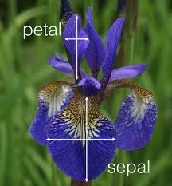
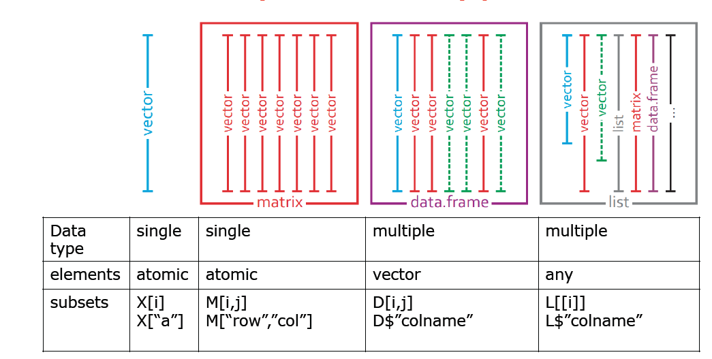

Code
data()Thomas Manke
Goal:
Real data is much more complex than simple vectors of numbers or strings.
Here we introduce new data structures, important functions, and some more jargon.
R comes with many pre-defined data sets. They are often used to illustrate statistical problems, data science concepts and functionality of software packages. Just type data() to get an overview.
One particularly famous data set is iris. We will use it throughout this course:

(Image from blog of mathieu.guillame-bert.com)
Tasks: Explore the iris data set
?iris to learn more about this data set.iris or View(iris). Why is this not the best way to explore data?Query:
How many samples and variables does this data set contain?
This iris data object is more complex than simple vectors discussed before.
Typical commands to explore such data objects are:
'data.frame': 150 obs. of 5 variables:
$ Sepal.Length: num 5.1 4.9 4.7 4.6 5 5.4 4.6 5 4.4 4.9 ...
$ Sepal.Width : num 3.5 3 3.2 3.1 3.6 3.9 3.4 3.4 2.9 3.1 ...
$ Petal.Length: num 1.4 1.4 1.3 1.5 1.4 1.7 1.4 1.5 1.4 1.5 ...
$ Petal.Width : num 0.2 0.2 0.2 0.2 0.2 0.4 0.3 0.2 0.2 0.1 ...
$ Species : Factor w/ 3 levels "setosa","versicolor",..: 1 1 1 1 1 1 1 1 1 1 ... Sepal.Length Sepal.Width Petal.Length Petal.Width Species
1 5.1 3.5 1.4 0.2 setosa
2 4.9 3.0 1.4 0.2 setosa
3 4.7 3.2 1.3 0.2 setosa
4 4.6 3.1 1.5 0.2 setosa
5 5.0 3.6 1.4 0.2 setosa
6 5.4 3.9 1.7 0.4 setosa Sepal.Length Sepal.Width Petal.Length Petal.Width Species
148 6.5 3.0 5.2 2.0 virginica
149 6.2 3.4 5.4 2.3 virginica
150 5.9 3.0 5.1 1.8 virginica[1] "data.frame" Sepal.Length Sepal.Width Petal.Length Petal.Width
Min. :4.300 Min. :2.000 Min. :1.000 Min. :0.100
1st Qu.:5.100 1st Qu.:2.800 1st Qu.:1.600 1st Qu.:0.300
Median :5.800 Median :3.000 Median :4.350 Median :1.300
Mean :5.843 Mean :3.057 Mean :3.758 Mean :1.199
3rd Qu.:6.400 3rd Qu.:3.300 3rd Qu.:5.100 3rd Qu.:1.800
Max. :7.900 Max. :4.400 Max. :6.900 Max. :2.500
Species
setosa :50
versicolor:50
virginica :50
[1] 150 5Data Frames are built from vectors with identical lengths.

Programmatic access to specific subsets of data is key to all analyses.
There are many basic ways to achieve this - and even more in later sections.
Sepal.Width Species
1 3.5 setosa
2 3.0 setosa
3 3.2 setosa[1] setosa setosa setosa versicolor
Levels: setosa versicolor virginica[1] setosa setosa setosa versicolor
Levels: setosa versicolor virginica Sepal.Length Sepal.Width Petal.Length Petal.Width
7 4.6 3.4 1.4 0.3
20 5.1 3.8 1.5 0.3
19 5.7 3.8 1.7 0.3
69 6.2 2.2 4.5 1.5Usually we want to access (or subset) data if certain conditions are met
Sepal.Length Sepal.Width Petal.Length Petal.Width Species
1 5.1 3.5 1.4 0.2 setosa
2 4.9 3.0 1.4 0.2 setosa
3 4.7 3.2 1.3 0.2 setosa
4 4.6 3.1 1.5 0.2 setosa
5 5.0 3.6 1.4 0.2 setosa
6 5.4 3.9 1.7 0.4 setosa
7 4.6 3.4 1.4 0.3 setosa
8 5.0 3.4 1.5 0.2 setosa
9 4.4 2.9 1.4 0.2 setosa
10 4.9 3.1 1.5 0.1 setosa
11 5.4 3.7 1.5 0.2 setosa
12 4.8 3.4 1.6 0.2 setosa
13 4.8 3.0 1.4 0.1 setosa
14 4.3 3.0 1.1 0.1 setosa
15 5.8 4.0 1.2 0.2 setosa
16 5.7 4.4 1.5 0.4 setosa
17 5.4 3.9 1.3 0.4 setosa
18 5.1 3.5 1.4 0.3 setosa
19 5.7 3.8 1.7 0.3 setosa
20 5.1 3.8 1.5 0.3 setosa
21 5.4 3.4 1.7 0.2 setosa
22 5.1 3.7 1.5 0.4 setosa
23 4.6 3.6 1.0 0.2 setosa
24 5.1 3.3 1.7 0.5 setosa
25 4.8 3.4 1.9 0.2 setosa
26 5.0 3.0 1.6 0.2 setosa
27 5.0 3.4 1.6 0.4 setosa
28 5.2 3.5 1.5 0.2 setosa
29 5.2 3.4 1.4 0.2 setosa
30 4.7 3.2 1.6 0.2 setosa
31 4.8 3.1 1.6 0.2 setosa
32 5.4 3.4 1.5 0.4 setosa
33 5.2 4.1 1.5 0.1 setosa
34 5.5 4.2 1.4 0.2 setosa
35 4.9 3.1 1.5 0.2 setosa
36 5.0 3.2 1.2 0.2 setosa
37 5.5 3.5 1.3 0.2 setosa
38 4.9 3.6 1.4 0.1 setosa
39 4.4 3.0 1.3 0.2 setosa
40 5.1 3.4 1.5 0.2 setosa
41 5.0 3.5 1.3 0.3 setosa
42 4.5 2.3 1.3 0.3 setosa
43 4.4 3.2 1.3 0.2 setosa
44 5.0 3.5 1.6 0.6 setosa
45 5.1 3.8 1.9 0.4 setosa
46 4.8 3.0 1.4 0.3 setosa
47 5.1 3.8 1.6 0.2 setosa
48 4.6 3.2 1.4 0.2 setosa
49 5.3 3.7 1.5 0.2 setosa
50 5.0 3.3 1.4 0.2 setosa Sepal.Length Sepal.Width Petal.Length Petal.Width Species
9 4.4 2.9 1.4 0.2 setosa
42 4.5 2.3 1.3 0.3 setosaTask:
ib in the above examples and understand what is meant with “access by truth value”. Sepal.Length Sepal.Width Petal.Length Petal.Width Species x
1 5.1 3.5 1.4 0.2 setosa 1
2 4.9 3.0 1.4 0.2 setosa 2
3 4.7 3.2 1.3 0.2 setosa 3
4 4.6 3.1 1.5 0.2 setosa 1
5 5.0 3.6 1.4 0.2 setosa 2
6 5.4 3.9 1.7 0.4 setosa 3
7 4.6 3.4 1.4 0.3 setosa 1
8 5.0 3.4 1.5 0.2 setosa 2
9 4.4 2.9 1.4 0.2 setosa 3
10 4.9 3.1 1.5 0.1 setosa 1---
title: "02: Higher Dimensional Data"
author: "Thomas Manke"
categories:
- iris
- data frame
---
```{r, child="_setup.qmd"}
```
**Goal**:
Real data is much more complex than simple vectors of numbers or strings.
Here we introduce new data structures, important functions, and some more jargon.
## data()
R comes with many pre-defined data sets. They are often used to illustrate statistical problems, data science concepts and functionality of software packages. Just type `data()` to get an overview.
```{r data_pre, eval=FALSE, echo=TRUE}
data()
```
One particularly famous data set is `iris`. We will use it throughout this course:

(Image from blog of mathieu.guillame-bert.com)
**Tasks**: Explore the `iris` data set
- Try `?iris` to learn more about this data set.
- Type `iris` or `View(iris)`. Why is this not the best way to explore data?
**Query:**
How many samples and variables does this data set contain?
***
## Data Frames
This iris data object is more complex than simple vectors discussed before.
Typical commands to explore such data objects are:
```{r explore}
str(iris) # the structure
head(iris) # the first few lines
tail(iris,n=3) # last n lines
class(iris) # data frame is a "class"
summary(iris) # works well with data_frames
dim(iris) # data frames ar 2D objects: rows x columns
```
Data Frames are built from vectors with identical lengths.

***
## Data Frame Access
Programmatic access to specific subsets of data is key to all analyses.
There are many basic ways to achieve this - and even more in later sections.
```{r iris_access}
d=iris # just to reduce typing
ir=1:3 # vector of row indices
ic=c(2,5) # vector of col indices
d[ir,ic] # selecting specific elements in 2D data frame
ir = c(7,20,19,69) # just some arbitrary choice of indices
d[ir,"Species"] # access by index and column by name
d$Species[ir] # the same, more common
d[ir,-5] # unselecting column 5
```
***
## Conditional Access
Usually we want to access (or subset) data if certain conditions are met
```{r cond_access}
# select only species "setosa"
ib = d$Species == "setosa"
d[ib,]
# select species "setosa" and "small Sepal.Width")
ib=(d$Species=="setosa") & (d$Sepal.Width<3)
d[ib,]
```
**Task**:
- Look at the vector `ib` in the above examples and understand what is meant with "access by truth value".
- Modify the criteria and try your own selections.
## Adding Data
```{r adding_data}
d$x = 1:3 # simple, but useless
head(d,10)
```
***
# Review
* pre-compiled data sets
* data_frames as a class with new functions
* access by index, name and boolean logic